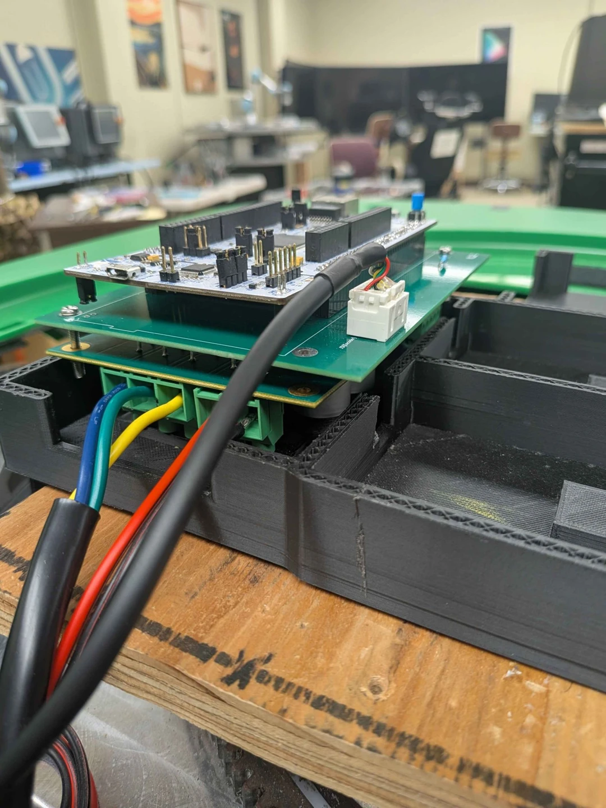
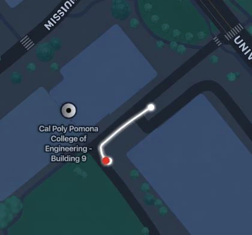
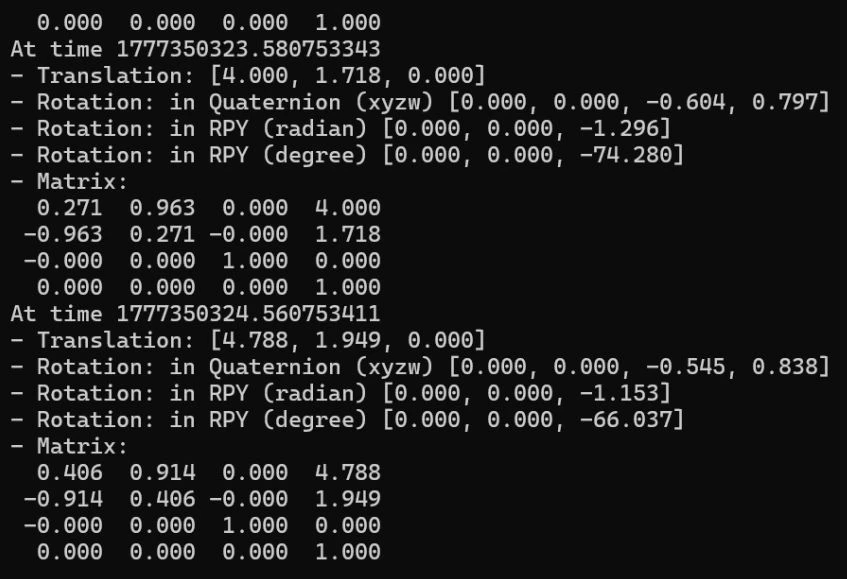
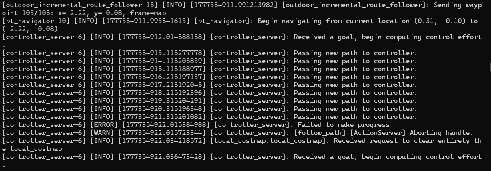

Giving a robot
a sense of place.
BREx Friesian · Autonomous localization & route replay
Combining GPS, IMU, and wheel odometry to estimate the iHerb robot’s position and replay routes across the Cal Poly Pomona campus.
Project lead · Sensor fusion
I led the project, with my main technical work focused on sensor fusion and localization. I also helped across the other subsystems, supporting integration and troubleshooting as the team brought the robot together.
Outdoor localization, waypoint recording, and autonomous route replay—without a base station.
A closer look at BREx
Photos and test output from our senior-project posters. Select an image for full size.



Inside the project
My focus: a usable position estimate
GPS noise, IMU drift, and wheel-odometry error made each sensor insufficient on its own. My sensor fusion work brought these inputs into ROS2’s robot_localization Extended Kalman Filter to estimate position, velocity, and orientation.
The Xsens MTi-680G already filters its inertial and GNSS measurements onboard. The robot-level filter combines that sensor data with wheel feedback. The navigation notes also flag overlapping Xsens measurements as a consideration when tuning covariance and investigating GPS jumps.
From global coordinates to a saved route
navsat_transform_node converts GNSS coordinates into a local frame for navigation. A manual datum supported indoor checks when live satellite data was unavailable.
During a manual drive, the recorder saved map-frame position and heading in a YAML file. Nav2 used the saved route and live localization estimate to guide autonomous replay.
Debugging during testing
When the planning area became the limit.
Outdoor replay ran into the bounds of a fixed planning region. The team changed to a rolling costmap and an incremental follower that sent smaller waypoint goals one at a time. Starting near the closest saved waypoint also made route recovery more flexible.
Within my localization work, testing included checking GNSS, odometry, filtered odometry, and coordinate transforms while the robot moved. This connected sensor behavior to what the navigation system was actually receiving.
Understanding the full control loop
Nav2’s velocity commands were converted into virtual joystick input so autonomous and manual driving could share the existing motor-control path. Wheel feedback then returned to the localization system, closing the loop.
As project lead, I supported work across the system. The wider team’s work included the wiring board, motor-control architecture, and perception pipeline.
